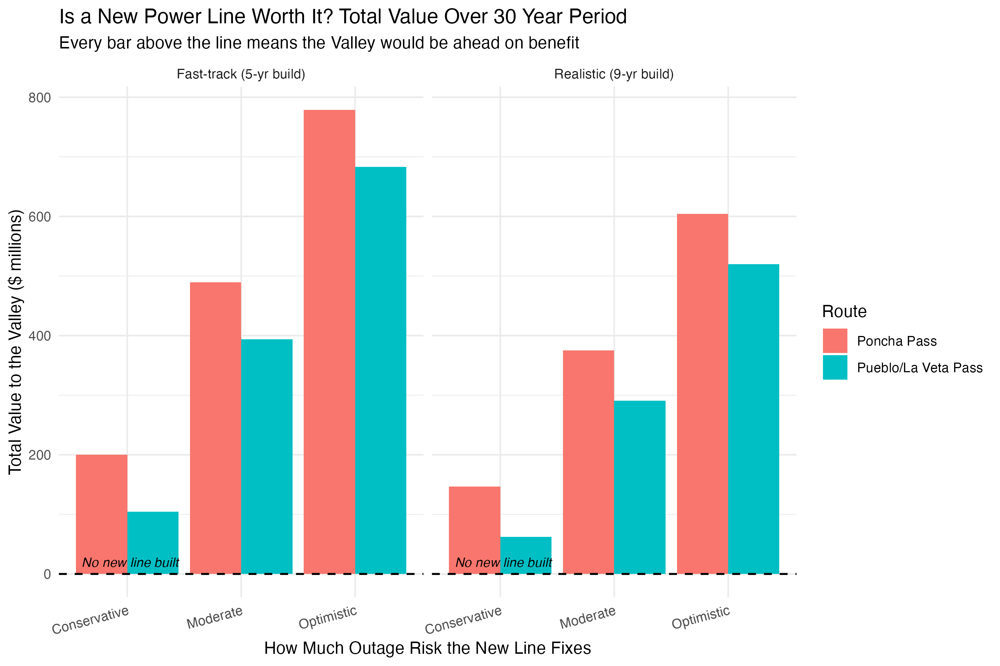
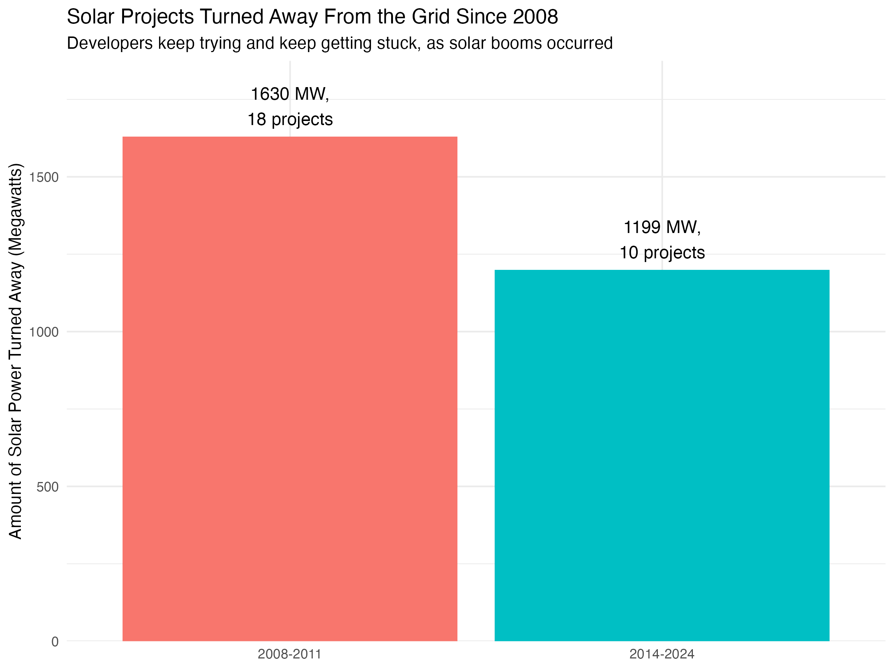
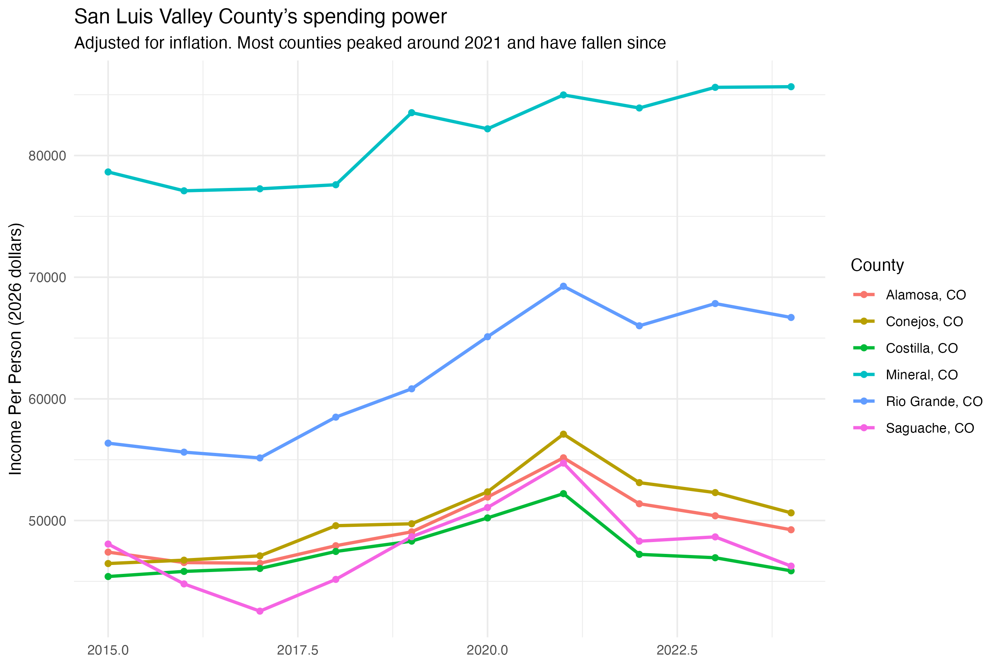
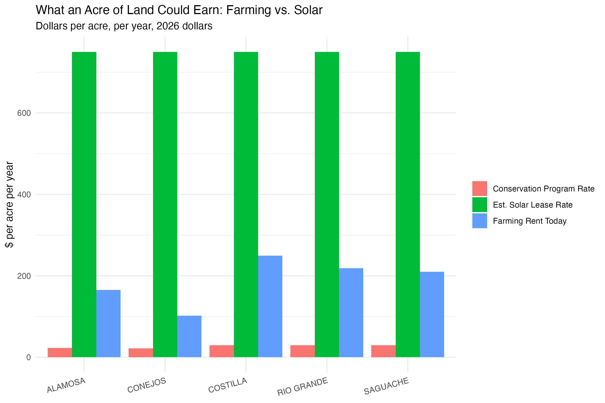

As a San Luis Valley resident, I recognize how important our utility infrastructure is. Out of curiosity and need of practice, I pulle data from multipl sourced to run a discounted cash flow model over a 30 year period. The model compares two different proposed transmission routes within the Valley. Built from federal reliability data, USDA land values, & NREL’s JEDI economic impact model.
This cash flow model looks at whether the cost of a new high-voltage transmission line would be outweighed by the benefit and by which route and timeline. Route one is a 70-mile line over Poncha Pass connecting into an existing substation, and route two is a 136-mile line over La Veta Pass to a new interconnection at the Comanche Substation in Pueblo. Both use a standard cost-benefit problem looking at capital cost vs a discounted amount of future benefits, run over a 30-year period.
Both the cost and benefits within the model are built from completely free and public data.. Building costs use a per-mile benchmark from three similar Colorado 230kV projects and NREL's JEDI economic impact model. Benefits are summed up from the avoided outage cost, which is calculated from each utility's posted reliability performance, and land value uplift, what the solar lease rate would pay different than the current farming rent. Every dollar figure is converted to 2026 values using a BLS CPI-U deflator before then using a discount rate over the 30-year period.
The Poncha Pass route costs an estimated $134.8 million in 2026 dollars; the Pueblo/La Veta Pass route costs $246.2 million. The main difference is influenced mostly by distance, 70 miles for Poncha against 136 for La Veta, and also since Poncha connects to an already existing substation (Poncha Springs, operating since 1980s), while La Veta would need new interconnection infrastructure since one does not currently exist.
Avoided outage cost is summed using LBNL's Interruption Cost Estimate (ICE) Calculator, fed with each utility's SAIDI/SAIFI reliability data and actual customer counts. Looking at both utility companies in the Valley, the annual outage cost is roughly $61.7 million a year, with non-residential customers, mainly agricultural businesses accounting for the majority of that cost. The difference between cash rent currently for acres of cropland and the estimated solar lease rate that could be had is the land value uplift. Currently there is 794 MW of solar sitting active in the region’s interconnection queue, which is about 3,335 acres. The difference between irrigated cropland lease and solar lease is small compared to the outage cost, only contributing $1.9 million annually to the $61.7 M figure from avoiding outages, but would likely be much bigger if we could quantify the environmental effect of not draining the aquifer as much with irrigation practices, as solar demands far less water.
I used different reliability improvement scenarios, both optimistic and pessimistic, avoiding current outage cost by 30%, 60%, and 90%. I also used two separate construction timelines for how long it would take to build, a 9-year realistic case and a 5-year optimistic case. All twelve combinations return positive net present value compared to cost, ranging from $62.1 million to $778.9 million over 30 years. Poncha had better ratios in every scenario which reflects its lower amount of miles and cost to build.
Using the standard federal discount rate (3.1% real) and the moderate reliability scenario of 60%, Poncha returns $4.67 in present-value benefit per $1 spent; La Veta returns $2.55. The two routes share an identical total benefit ($477.9 million in present value), since the benefit calculation did not vary by route, only the cost (denominator) differs. Poncha's higher ratio is a function of being shorter and cheaper to build, not due to pulling greater benefits. The problem that this model does not capture is that we need redundancy with the lines; having two lines going in and out on the same route would likely affect reliability because one disaster along the identically run route, means both lines likely being affected.
I also tested a much higher 7% discount rate to show that the benefit is not being only driven by a more generous rate of what future value will be. A 7% rate reduced Poncha's net benefit from $375.4 million to $175.1 million, and La Veta's from $290.8 million to $114.5 million. Both, however, remain positive even under the tougher rate, proving that the result is not dependent on a favorable discount rate.
The largest limitation in the model is that both routes are given the same reliability improvement benefit, treating them as equally effective at limiting outages. Which would not be the case. A second line through Poncha Pass shares the same physical mountain corridor as the existing line, exposing both to the same failure risk. A new line route through La Veta Pass is a geographically separate corridor and would have a separate and independent exposure. The model struggled to price the value of failure independence between two routes, since it instead values discounted dollars, and not resilience on a shared point of breakdown.
Net present value on different optimism and buildtime, interconnection queue history, SLV income trends, and the land rent value comparison with the solar-lease benefit.

Source: Author's calculation. Capital costs from NREL JEDI model runs and comparable-project benchmarks; benefits from LBNL ICE Calculator and USDA NASS land rent data. Author: Andy Setser.

Source: Lawrence Berkeley National Laboratory, "Queued Up" interconnection queue dataset, through 2025. Filtered to San Luis Valley counties. Author: Andy Setser.

Source: U.S. Bureau of Economic Analysis, Regional Economic Accounts, Table CAINC1. Deflated using BLS CPI-U annual averages. Author: Andy Setser.

Source: USDA NASS Quick Stats (cash rent), USDA FSA (CRP county average rates), solar lease rate estimated from national and regional market data. Author: Andy Setser.
Net present value listed for each of the twelve scenarios, showing cost benefit ratios, and the discount rates both used.
| Route / Timeline | Conservative (30% reliability gain) |
Moderate (60% reliability gain) |
Optimistic (90% reliability gain) |
|---|---|---|---|
| Poncha Pass — Realistic Timeline (9-yr build) | |||
| Net Present Value | $146.7M | $375.4M | $604.2M |
| Poncha Pass — Optimistic Timeline (5-yr build) | |||
| Net Present Value | $199.9M | $489.4M | $778.9M |
| Pueblo/La Veta Pass — Realistic Timeline (9-yr build) | |||
| Net Present Value | $62.1M | $290.8M | $519.6M |
| Pueblo/La Veta Pass — Optimistic Timeline (5-yr build) | |||
| Net Present Value | $104.3M | $393.8M | $683.3M |
| Route | PV Total Cost | PV Total Benefit | cost-benefit Ratio |
|---|---|---|---|
| Moderate Scenario, Realistic Timeline, 3.1% Discount Rate | |||
| Poncha Pass | $102.4M | $477.9M | 4.67 |
| Pueblo/La Veta Pass | $187.0M | $477.9M | 2.55 |
| Route | 3.1% (Federal Standard) | 7% (Conservative) |
|---|---|---|
| Discount Rate Sensitivity, Moderate Scenario, Realistic Timeline | ||
| Poncha Pass | $375.4M | $175.1M |
| Pueblo/La Veta Pass | $290.8M | $114.5M |
All figures in 2026 dollars, discounted to present value. cost-benefit ratio = PV total benefit ÷ PV total cost.
The code is made to be copy and pasted and run through R. It will require a free API key from USDA NASS Quick Stats, NREL, and BEA, also for downloads from USDA FSA, LBNL, and EIA (any sources are linked below for your usage).
library(dplyr)
library(readxl)
library(httr)
# --- Farmland rent today (USDA NASS), will use to compare to what solar lease is ---
library(rnassqs)
nassqs_auth(key = "YOUR_NASS_KEY")
slv_counties <- c("ALAMOSA", "SAGUACHE", "COSTILLA", "CONEJOS", "MINERAL", "RIO GRANDE")
slv_counties_titlecase <- c("Alamosa", "Saguache", "Costilla", "Conejos", "Mineral", "Rio Grande")
irrigated_items <- nassqs_param_values("short_desc", commodity_desc = "RENT", state_alpha = "CO")
irrigated_target <- irrigated_items[grepl("IRRIGATED", irrigated_items) & !grepl("NON-IRRIGATED", irrigated_items)]
irrigated_rent <- nassqs(short_desc = irrigated_target, agg_level_desc = "COUNTY", state_alpha = "CO", year = "2023")
slv_irrigated_rent_2023 <- irrigated_rent |>
filter(county_name %in% slv_counties) |>
select(county_name, Value, `CV (%)`)
saveRDS(slv_irrigated_rent_2023, "Slv_irrigated_rent_2023.rds")
# --- Conservation program rate (USDA FSA) ---
crp_cropland_raw <- read_excel("CRP_2023_County_Average_SRRs.xlsx")
crp_co <- crp_cropland_raw |> filter(STATE == "Colorado")
crp_slv <- crp_co |>
filter(COUNTY %in% slv_counties_titlecase) |>
select(COUNTY, `2023 County Average Rate*`)
saveRDS(crp_slv, "crp_slv_2023.rds")
# --- Farming rent, conservation rent, and an estimated solar lease side by side ---
# solar lease numbers are a national market estimate
land_value_comparison <- slv_irrigated_rent_2023 |>
mutate(Value = as.numeric(Value), county_upper = county_name) |>
select(county_upper, cash_rent = Value) |>
left_join(
crp_slv |> mutate(county_upper = toupper(COUNTY)) |> select(county_upper, crp_rate = `2023 County Average Rate*`),
by = "county_upper"
) |>
mutate(solar_lease_low = 500, solar_lease_mid = 750, solar_lease_high = 1000)
saveRDS(land_value_comparison, "land_value_comparison.rds")
# --- Solar resource check (NREL), showing the Valley is a popular area for attracting solar ---
county_coords <- tibble::tribble(
~county_upper, ~lat, ~lon,
"ALAMOSA", 37.4695, -105.8700,
"CONEJOS", 37.1256, -106.0900,
"COSTILLA", 37.2975, -105.4550,
"RIO GRANDE", 37.5586, -106.1350,
"SAGUACHE", 38.0850, -106.1720
)
nrel_key <- "YOUR_NREL_KEY"
get_solar_resource <- function(lat, lon, key) {
url <- paste0("https://developer.nrel.gov/api/solar/solar_resource/v1.json?api_key=", key, "&lat=", lat, "&lon=", lon)
result <- content(GET(url))
tibble::tibble(lat = lat, lon = lon, avg_dni = result$outputs$avg_dni$annual, avg_ghi = result$outputs$avg_ghi$annual, avg_lat_tilt = result$outputs$avg_lat_tilt$annual)
}
solar_resource_slv <- purrr::pmap_dfr(list(county_coords$lat, county_coords$lon), ~ get_solar_resource(.x, .y, nrel_key))
solar_resource_slv <- bind_cols(county_upper = county_coords$county_upper, solar_resource_slv)
saveRDS(solar_resource_slv, "solar_resource_slv.rds")
# --- Solar projects that already tried to connect and got turned away (LBNL queue data) ---
queue_raw <- read_excel("LBNL_Ix_Queue_Data_File_thru2025.xlsx", sheet = "03. Complete Queue Data", skip = 1)
queue_slv <- queue_raw |>
filter(state == "CO") |>
filter(county %in% slv_counties_titlecase)
saveRDS(queue_slv, "queue_slv_2025.rds")
# --- Cost to build a new line, benchmarked against three real Colorado 230kV projects, adjusted up for mountain terrain ---
comparable_projects <- tibble::tribble(
~project_name, ~cost_millions, ~miles,
"Big Sandy-Badger Creek 230kV", 65.6, 80,
"Burlington-Lamar 230kV", 89.0, 112,
"Boone-Huckleberry 230kV", 37.3, 31
) |> mutate(cost_per_mile_millions = cost_millions / miles)
terrain_multiplier_low <- 1.2
terrain_multiplier_high <- 1.5
cost_per_mile_low <- min(comparable_projects$cost_per_mile_millions) * terrain_multiplier_low
cost_per_mile_mid <- mean(comparable_projects$cost_per_mile_millions) * ((terrain_multiplier_low + terrain_multiplier_high) / 2)
cost_per_mile_high <- max(comparable_projects$cost_per_mile_millions) * terrain_multiplier_high
saveRDS(list(low = cost_per_mile_low, mid = cost_per_mile_mid, high = cost_per_mile_high), "transmission_cost_per_mile.rds")
# --- The two routes: Poncha (shorter, connects into an existing substation) and La Veta (longer, needs a new connection) ---
route_mileage <- tibble::tribble(
~route, ~miles, ~source, ~endpoint_note,
"Pueblo/La Veta Pass", 136, "confirmed - 2009 Xcel/Tri-State CPCN filing", "New corridor; connects through Calumet Substation to the existing Comanche Substation in Pueblo, a major hub feeding the Front Range grid",
"Poncha Pass", 70, "estimated - Alamosa to Salida road distance", "Ties into the existing Poncha Springs Substation, already in service since the 1980s"
)
route_cost_estimate <- route_mileage |>
mutate(cost_low = miles * cost_per_mile_low, cost_mid = miles * cost_per_mile_mid, cost_high = miles * cost_per_mile_high)
saveRDS(route_cost_estimate, "route_cost_estimate.rds")
saveRDS(route_mileage, "route_mileage.rds")
# --- How often the power goes out today (EIA-861), for both Valley utilities ---
reliability_raw <- read_excel("Reliability_2024.xlsx", sheet = "Reliability_States", skip = 2)
reliability_slv <- reliability_raw |>
filter(State == "CO") |>
filter(grepl("Xcel|Public Service|San Luis Valley", `Utility Name`, ignore.case = TRUE)) |>
select(utility_name = `Utility Name`, state = State,
saidi_minutes = `SAIDI (minutes per year)...6`,
saifi_freq = `SAIFI (times per year)...7`,
caidi_minutes = `CAIDI (minutes per interruption)...8`)
saveRDS(reliability_slv, "reliability_slv_2024.rds")
# --- Local income trend (U.S. Bureau of Economic Analysis), context for the write-up only, not used in the CBA ---
library(bea.R)
bea_key <- "YOUR_BEA_KEY"
slv_fips <- c("08003", "08021", "08023", "08079", "08105", "08109")
bea_percapita <- beaGet(list(UserID = bea_key, Method = "GetData", datasetname = "Regional", TableName = "CAINC1", LineCode = "3", GeoFIPS = "COUNTY", Year = "LAST10", ResultFormat = "json"), asWide = FALSE)
bea_percapita_slv <- bea_percapita |>
filter(GeoFips %in% slv_fips) |>
select(GeoName, TimePeriod, DataValue)
saveRDS(bea_percapita_slv, "bea_percapita_slv_2015_2024.rds")
# --- Jobs created from building the line, and from the solar it unlocks (NREL's JEDI model, run separately in Excel) ---
jedi_transmission_laveta <- tibble::tibble(route = "Pueblo/La Veta Pass", total_project_cost = 177823929, construction_jobs_total = 851, dollar_year = 2015)
jedi_transmission_poncha <- tibble::tibble(route = "Poncha Pass", total_project_cost = 97385265, construction_jobs_total = 447, dollar_year = 2015)
jedi_solar_794mw <- tibble::tibble(system_mw = 794, total_project_cost = 881340000, construction_jobs_total = 4042.7, dollar_year = 2026)
jedi_transmission_combined <- dplyr::bind_rows(jedi_transmission_laveta, jedi_transmission_poncha)
saveRDS(jedi_transmission_combined, "jedi_transmission_combined.rds")
saveRDS(jedi_solar_794mw, "jedi_solar_794mw.rds")
current_transfer_capacity_mw <- 94.5 # max power the Valley can currently send out
saveRDS(current_transfer_capacity_mw, "current_transfer_capacity_mw.rds")
# --- BLS CPI-U annual averages, used to standardize every dollar figure to 2026 ---
cpi_index <- tibble::tribble(
~year, ~cpi,
2015, 236.7, 2016, 238.3, 2017, 242.7, 2018, 248.1,
2019, 253.3, 2020, 257.2, 2021, 263.2, 2022, 282.0,
2023, 299.7, 2024, 309.6, 2025, 317.7, 2026, 327.7
)
saveRDS(cpi_index, "cpi_index.rds")
base_year_cpi <- cpi_index |> filter(year == 2026) |> pull(cpi)
inflate_to_base <- function(value, source_year) {
source_cpi <- cpi_index |> filter(year == source_year) |> pull(cpi)
value * (base_year_cpi / source_cpi)
}
# --- Bring every dollar figure collected above into 2026 terms ---
jedi_transmission_combined <- jedi_transmission_combined |>
mutate(total_project_cost_2026 = inflate_to_base(total_project_cost, 2015))
saveRDS(jedi_transmission_combined, "jedi_transmission_combined.rds")
land_value_comparison <- land_value_comparison |>
mutate(cash_rent_2026 = inflate_to_base(cash_rent, 2023), crp_rate_2026 = inflate_to_base(crp_rate, 2023))
saveRDS(land_value_comparison, "land_value_comparison.rds")
bea_percapita_slv <- bea_percapita_slv |>
mutate(TimePeriod = as.numeric(TimePeriod), DataValue_2026 = as.numeric(mapply(inflate_to_base, DataValue, TimePeriod)))
saveRDS(bea_percapita_slv, "bea_percapita_slv_2015_2024.rds")
# --- What outages already cost the Valley every year (LBNL's ICE Calculator, using real outage numbers and customer counts) ---
voll_slvrec <- tibble::tibble(utility = "SLVREC", total_annual_outage_cost = 38358385.79, dollar_year = 2025)
voll_xcel <- tibble::tibble(utility = "Xcel/Public Service Co", total_annual_outage_cost = 21460618.62, dollar_year = 2025)
voll_combined <- dplyr::bind_rows(voll_slvrec, voll_xcel)
voll_valley_total <- sum(voll_combined$total_annual_outage_cost)
voll_valley_total_2026 <- inflate_to_base(voll_valley_total, 2025)
saveRDS(voll_combined, "voll_combined.rds")
saveRDS(voll_valley_total_2026, "voll_valley_total_2026.rds")
discount_rate_base <- 0.031 # federal standard rate (OMB)
discount_rate_conservative <- 0.07 # tougher discount rate to run by
analysis_period <- 30 # years being estimated
base_year <- 2026 # every dollar figure converted to this value
# --- Building the 30-year timeline ---
# realistic construction: 9 years to plan, permit, and build, based on real permitting timelines and the La Veta history
# optimistic case: 5-year construction completion
# solar is assumed to take 2 extra years to get built once the line is ready
inservice_year_realistic <- 9
inservice_year_optimistic <- 5
solar_lag_years <- 2
build_timeline <- function(inservice_year, solar_lag) {
tibble::tibble(
year = 1:analysis_period,
line_is_running = year >= inservice_year,
solar_is_running = year >= (inservice_year + solar_lag)
)
}
timeline_realistic <- build_timeline(inservice_year_realistic, solar_lag_years)
timeline_optimistic <- build_timeline(inservice_year_optimistic, solar_lag_years)
# --- Cost vs. benefit inputs, in 2026 dollars ---
acres_per_mw_single_axis <- 4.2
solar_acreage_794mw <- 794 * acres_per_mw_single_axis
avg_cash_rent_2026 <- mean(land_value_comparison$cash_rent_2026, na.rm = TRUE)
solar_lease_mid <- 750
# extra money landowners could earn leasing fallowed land to solar instead of farming it
yearly_land_value_gain <- (solar_lease_mid - avg_cash_rent_2026) * solar_acreage_794mw
# what the Valley currently loses every year to outages, both utility companies combined
yearly_outage_savings <- voll_valley_total_2026
poncha_build_cost <- jedi_transmission_combined |> filter(route == "Poncha Pass") |> pull(total_project_cost_2026)
laveta_build_cost <- jedi_transmission_combined |> filter(route == "Pueblo/La Veta Pass") |> pull(total_project_cost_2026)
# a new line won't stop every outage, some are local rather than transmission-related,
# so test three levels of reliability improvement
reliability_improvement_low <- 0.30
reliability_improvement_mid <- 0.60
reliability_improvement_high <- 0.90
# --- Cash flow: money spent once during the build year, then saved/earned every year the line
# and solar are running, all valued in 2026 dollars ---
build_cashflow_table <- function(timeline, build_cost, inservice_year, reliability_share, discount_rate) {
timeline |>
mutate(
money_spent_this_year = if_else(year == inservice_year, build_cost, 0),
outage_savings_this_year = if_else(line_is_running, yearly_outage_savings * reliability_share, 0),
land_value_gain_this_year = if_else(solar_is_running, yearly_land_value_gain, 0),
total_benefit_this_year = outage_savings_this_year + land_value_gain_this_year,
net_money_this_year = total_benefit_this_year - money_spent_this_year,
value_in_todays_dollars = net_money_this_year / (1 + discount_rate)^year,
pv_cost_this_year = money_spent_this_year / (1 + discount_rate)^year,
pv_benefit_this_year = total_benefit_this_year / (1 + discount_rate)^year
)
}
# --- Every combination, total value tested over 30 years ---
npv_poncha_low <- sum(build_cashflow_table(timeline_realistic, poncha_build_cost, inservice_year_realistic, reliability_improvement_low, discount_rate_base)$value_in_todays_dollars)
npv_poncha_mid <- sum(build_cashflow_table(timeline_realistic, poncha_build_cost, inservice_year_realistic, reliability_improvement_mid, discount_rate_base)$value_in_todays_dollars)
npv_poncha_high <- sum(build_cashflow_table(timeline_realistic, poncha_build_cost, inservice_year_realistic, reliability_improvement_high, discount_rate_base)$value_in_todays_dollars)
npv_laveta_low <- sum(build_cashflow_table(timeline_realistic, laveta_build_cost, inservice_year_realistic, reliability_improvement_low, discount_rate_base)$value_in_todays_dollars)
npv_laveta_mid <- sum(build_cashflow_table(timeline_realistic, laveta_build_cost, inservice_year_realistic, reliability_improvement_mid, discount_rate_base)$value_in_todays_dollars)
npv_laveta_high <- sum(build_cashflow_table(timeline_realistic, laveta_build_cost, inservice_year_realistic, reliability_improvement_high, discount_rate_base)$value_in_todays_dollars)
npv_poncha_opt_low <- sum(build_cashflow_table(timeline_optimistic, poncha_build_cost, inservice_year_optimistic, reliability_improvement_low, discount_rate_base)$value_in_todays_dollars)
npv_poncha_opt_mid <- sum(build_cashflow_table(timeline_optimistic, poncha_build_cost, inservice_year_optimistic, reliability_improvement_mid, discount_rate_base)$value_in_todays_dollars)
npv_poncha_opt_high <- sum(build_cashflow_table(timeline_optimistic, poncha_build_cost, inservice_year_optimistic, reliability_improvement_high, discount_rate_base)$value_in_todays_dollars)
npv_laveta_opt_low <- sum(build_cashflow_table(timeline_optimistic, laveta_build_cost, inservice_year_optimistic, reliability_improvement_low, discount_rate_base)$value_in_todays_dollars)
npv_laveta_opt_mid <- sum(build_cashflow_table(timeline_optimistic, laveta_build_cost, inservice_year_optimistic, reliability_improvement_mid, discount_rate_base)$value_in_todays_dollars)
npv_laveta_opt_high <- sum(build_cashflow_table(timeline_optimistic, laveta_build_cost, inservice_year_optimistic, reliability_improvement_high, discount_rate_base)$value_in_todays_dollars)
npv_full_summary <- tibble::tibble(
route = rep(c("Poncha Pass", "Pueblo/La Veta Pass"), each = 6),
timeline = rep(rep(c("Realistic (9-yr build)", "Fast-track (5-yr build)"), each = 3), 2),
scenario = rep(c("Conservative", "Moderate", "Optimistic"), 4),
net_benefit = c(
npv_poncha_low, npv_poncha_mid, npv_poncha_high,
npv_poncha_opt_low, npv_poncha_opt_mid, npv_poncha_opt_high,
npv_laveta_low, npv_laveta_mid, npv_laveta_high,
npv_laveta_opt_low, npv_laveta_opt_mid, npv_laveta_opt_high
)
)
saveRDS(npv_full_summary, "npv_full_summary.rds")
# --- cost-benefit ratio: for every $1 spent, how many dollars are returned? (moderate scenario, realistic timeline) ---
compute_pv_cost_benefit <- function(timeline, build_cost, inservice_year, reliability_share, discount_rate) {
cf <- build_cashflow_table(timeline, build_cost, inservice_year, reliability_share, discount_rate)
tibble::tibble(
pv_total_cost = sum(cf$pv_cost_this_year),
pv_total_benefit = sum(cf$pv_benefit_this_year),
benefit_cost_ratio = sum(cf$pv_benefit_this_year) / sum(cf$pv_cost_this_year)
)
}
poncha_ratio <- compute_pv_cost_benefit(timeline_realistic, poncha_build_cost, inservice_year_realistic, reliability_improvement_mid, discount_rate_base)
laveta_ratio <- compute_pv_cost_benefit(timeline_realistic, laveta_build_cost, inservice_year_realistic, reliability_improvement_mid, discount_rate_base)
benefit_cost_ratio_summary <- dplyr::bind_rows(
poncha_ratio |> mutate(route = "Poncha Pass", .before = 1),
laveta_ratio |> mutate(route = "Pueblo/La Veta Pass", .before = 1)
)
saveRDS(benefit_cost_ratio_summary, "benefit_cost_ratio_summary.rds")
# poncha_ratio$benefit_cost_ratio -> 4.67
# laveta_ratio$benefit_cost_ratio -> 2.55
# --- Does a tougher discount rate change the benefit? (moderate scenario, realistic timeline) ---
npv_poncha_base_rate <- sum(build_cashflow_table(timeline_realistic, poncha_build_cost, inservice_year_realistic, reliability_improvement_mid, discount_rate_base)$value_in_todays_dollars)
npv_poncha_tough_rate <- sum(build_cashflow_table(timeline_realistic, poncha_build_cost, inservice_year_realistic, reliability_improvement_mid, discount_rate_conservative)$value_in_todays_dollars)
npv_laveta_base_rate <- sum(build_cashflow_table(timeline_realistic, laveta_build_cost, inservice_year_realistic, reliability_improvement_mid, discount_rate_base)$value_in_todays_dollars)
npv_laveta_tough_rate <- sum(build_cashflow_table(timeline_realistic, laveta_build_cost, inservice_year_realistic, reliability_improvement_mid, discount_rate_conservative)$value_in_todays_dollars)
npv_discount_sensitivity <- tibble::tibble(
route = rep(c("Poncha Pass", "Pueblo/La Veta Pass"), each = 2),
discount_rate = rep(c("Standard rate", "Tougher rate"), 2),
net_benefit = c(npv_poncha_base_rate, npv_poncha_tough_rate, npv_laveta_base_rate, npv_laveta_tough_rate)
)
saveRDS(npv_discount_sensitivity, "npv_discount_sensitivity.rds")
library(ggplot2)
# --- Chart 1: the headline result — bars above the dashed line mean the line is worth building ---
chart_npv <- ggplot(npv_full_summary, aes(x = scenario, y = net_benefit / 1e6, fill = route)) +
geom_col(position = "dodge") +
geom_hline(yintercept = 0, linetype = "dashed", linewidth = 0.6) +
annotate("text", x = 0.6, y = 20, label = "No new line built", hjust = 0, size = 3, fontface = "italic") +
facet_wrap(~timeline) +
labs(
title = "Is a New Power Line Worth It?",
subtitle = "Every bar above the line means the Valley comes out ahead",
x = "How Much the New Line Actually Fixes Outages",
y = "Total Value ($ millions)",
fill = "Route"
) +
theme_minimal() +
theme(axis.text.x = element_text(angle = 15, hjust = 1))
ggsave("chart_1_headline_value.png", chart_npv, width = 9, height = 6, dpi = 300)
# --- Chart 2: proof solar demand is real and ongoing (LBNL queue data) ---
queue_era_summary <- queue_slv |>
filter(q_status == "withdrawn") |>
mutate(era = ifelse(q_year <= 2011, "2008-2011", "2014-2024")) |>
group_by(era) |>
summarise(total_mw = sum(mw_1, na.rm = TRUE), n_projects = n())
chart_queue <- ggplot(queue_era_summary, aes(x = era, y = total_mw, fill = era)) +
geom_col(show.legend = FALSE) +
geom_text(aes(label = paste0(round(total_mw), " MW,\n", n_projects, " projects")), vjust = -0.3, size = 4) +
scale_y_continuous(expand = expansion(mult = c(0, 0.15))) +
labs(
title = "Solar Projects Turned Away Since 2008",
subtitle = "Developers keep trying and keep getting stuck",
x = NULL,
y = "Solar Power Turned Away (Megawatts)"
) +
theme_minimal()
ggsave("chart_2_solar_turned_away.png", chart_queue, width = 8, height = 6, dpi = 300)
# --- Chart 3: real income trend (U.S. Bureau of Economic Analysis) ---
chart_percapita <- ggplot(bea_percapita_slv, aes(x = TimePeriod, y = DataValue_2026, color = GeoName)) +
geom_line(linewidth = 1) +
geom_point() +
labs(
title = "San Luis Valley Income, Adjusted for Inflation",
subtitle = "Most counties peaked around 2021 and have fallen since",
x = NULL,
y = "Income Per Person (2026 dollars)",
color = "County"
) +
theme_minimal()
ggsave("chart_3_real_income_trend.png", chart_percapita, width = 9, height = 6, dpi = 300)
# --- Chart 4: what land could earn instead (USDA rent data vs. estimated solar lease) ---
land_value_chart_data <- land_value_comparison |>
select(county_upper, cash_rent_2026, crp_rate_2026) |>
mutate(solar_lease_mid = 750) |>
tidyr::pivot_longer(cols = c(cash_rent_2026, crp_rate_2026, solar_lease_mid), names_to = "value_type", values_to = "dollars_per_acre") |>
mutate(value_type = recode(value_type,
cash_rent_2026 = "Farming Rent Today",
crp_rate_2026 = "Conservation Program Rate",
solar_lease_mid = "Est. Solar Lease Rate"
))
chart_land_value <- ggplot(land_value_chart_data, aes(x = county_upper, y = dollars_per_acre, fill = value_type)) +
geom_col(position = "dodge") +
labs(
title = "What an Acre of Land Could Earn",
subtitle = "Farming vs. solar, dollars per acre per year, 2026 dollars",
x = NULL,
y = "$ per acre per year",
fill = NULL
) +
theme_minimal() +
theme(axis.text.x = element_text(angle = 15, hjust = 1))
ggsave("chart_4_land_value_comparison.png", chart_land_value, width = 9, height = 6, dpi = 300)
# --- Print results ---
cat("\n===== cost-benefit RATIO (moderate scenario) =====\n")
print(benefit_cost_ratio_summary)
cat("\n===== FULL RESULTS TABLE =====\n")
print(npv_full_summary)
cat("\n===== DISCOUNT RATE CHECK =====\n")
print(npv_discount_sensitivity)
U.S. Department of Agriculture, National Agricultural Statistics Service. Quick Stats [dataset]. quickstats.nass.usda.gov
U.S. Department of Agriculture, Farm Service Agency. Conservation Reserve Program County Average Rental Rates. fsa.usda.gov
U.S. Energy Information Administration. Form EIA-861, Annual Electric Power Industry Report. eia.gov/electricity/data/eia861
Lawrence Berkeley National Laboratory. Queued Up: 2026 Edition [interconnection queue dataset]. emp.lbl.gov/queues
Lawrence Berkeley National Laboratory. Interruption Cost Estimate (ICE) Calculator. icecalculator.com
National Renewable Energy Laboratory. Jobs and Economic Development Impact (JEDI) Models. nrel.gov/analysis/jedi
U.S. Bureau of Economic Analysis. Regional Economic Accounts, Table CAINC1. apps.bea.gov/regional
U.S. Bureau of Labor Statistics. Consumer Price Index for All Urban Consumers (CPI-U). bls.gov/cpi
U.S. Office of Management and Budget. Circular A-94: Guidelines and Discount Rates for cost-benefit Analysis of Federal Programs.